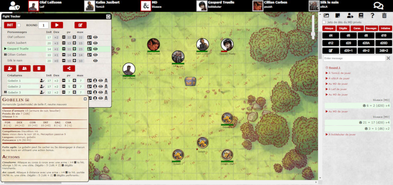

Éditos 2020
Édito du 01/12/2020
Absence
 De gros problèmes personnels me tiennent éloigné du site et de D&D depuis déjà un mois. Et cela va durer ainsi encore un bon moment, même si j'espère pouvoir poster quelques news de temps en temps. Je vous demande la même chose qu'on me demande à moi, de la patience, beaucoup de patience... et un peu de chance aussi...
De gros problèmes personnels me tiennent éloigné du site et de D&D depuis déjà un mois. Et cela va durer ainsi encore un bon moment, même si j'espère pouvoir poster quelques news de temps en temps. Je vous demande la même chose qu'on me demande à moi, de la patience, beaucoup de patience... et un peu de chance aussi...
Je ne peux plus m'occuper de l'Online Assistant comme avant, mais toutes les applications du site restent fonctionnelles.
Édito du 27/10/2020
Les plans pour l'Online Assistant
L'Online Assistant d'Tapouweb est une application en ligne qui permet de jouer à D&D 5 à distance et en temps réel, ce qu'on appelle une Table Virtuelle (VTT). Mais vous pouvez également l'utiliser lors de vos parties sur forum pour les battlemaps ou autour d'une table pour le Fight Tracker.
L'outil est en test depuis la mi-septembre et une vingtaine de tables ont déjà été ouvertes. Le développement des fonctions est maintenant terminé et on rentre dans une phase de stabilisation, c'est-à-dire sans plus d'ajouts de nouvelles fonctions, juste des corrections et des améliorations de ce qui existe, avec l'intention de terminer la phase béta avant la fin de l'année. L'Online Assistant est toutefois entièrement jouable et sans limitations dès maintenant alors, si vous souhaitez participer à la béta, faites-en simplement la demande sur le forum (les sollicitudes par d'autres moyens ne seront pas prises en compte).
Je rappelle aussi au passage que l'Online Assistant remplacera le Fight Tracker, qui disparaîtra donc avant la fin de l'année, même si le concept est un peu différent. En particulier, le Fight Tracker était accessible à tous directement alors que pour accéder à l'Online Assistant vous devrez avoir un compte sur le forum et demander l'ouverture d'une table, ce qui est toutefois relativement simple.
Édito du 20/09/2020
Online Assistant, la VTT d'Tapouweb
Annoncé dans l'édito du 24 juin, l'Online Assistant continue sa phase de test. Pour rappel, il s'agit d'une application en ligne (sans installation sur votre machine) et gratuite pour pouvoir jouer à D&D 5 à distance et en temps réel, ce qu'on appelle une Table Virtuelle (VTT). Mais on pourrait aussi l'utiliser pour simplement disposer d'une battlemap lors d'une partie sur forum.
- la présentation de l'outil (jets de dés, Fight Tracker / HP Tracker, partage d'images, messages privés entre joueurs et MD, battlemap)
- le forum pour en parler, où j'ai posté un premier compte-rendu d'utilisation suite à une première partie jouée.
Si cela semble répondre à vos besoins, contactez moi (par MP sur le forum uniquement).
Édito du 01/09/2020
Statistiques du CB
De nombreuses nouvelles statistiques provenant du Character Builder d'Tapouweb sont maintenant disponibles (voir news du 01/09/20).
Outre celles désormais classiques sur l'usage des races et des classes, vous pouvez maintenant voir quels sont les historiques le plus utilisés (le sage et le soldat se démarquant), quels sont les alignements les plus choisis (mauvais n'est pas si rare que je l'aurais pensé) et les niveaux des personnages. Concernant ces derniers, n'oubliez pas qu'il s'agit d'un outil pour remplir sa feuille de personnage, donc le fait que le niveau 1 soit sur-représenté me semble tout à fait normal.
Une autre donnée très intéressante est celle qui permet de voir quelles classes sont les plus utilisées en fonction d'une race. Et je suis rassuré car les stéréotypes à D&D (que j’affectionne) ont la vie dure. Elfe rôdeur, demi-elfe barde, nain guerrier, ça me plait !
On suivra ça mois après mois.
Édito du 01/08/2020
Putain, 20 ans !
Et oui, Tapouweb fête en ce mois d’août 2020 ses 20 ans.
Que de chemin parcouru depuis ces deux ou trois premières pages web sur AD&D et Laelith tout à la fin du siècle dernier. Nombreux parmi vous sont ceux qui ne connaissent le site que depuis la sortie de D&D 5, mais Tapouweb a parlé de nombreuses autres éditions de Dungeons & Dragons avant la 5ème, et même de Pathfinder et de Chroniques Oubliés à un moment.
Il y a depuis longtemps sur le site une page qui relate la naissance du site, et aujourd'hui pour marquer le coup je viens d'y rajouter des screenshots de la page d'accueil tout au long de ces 20 ans. Nostalgie. Mais pas trop tout de même, car je suis fier d'avoir focalisé Tapouweb sur D&D 5. Au lieu de se rétrécir, de par le fait de ne plus parler que d'une seule version de D&D, voire de disparaître, suite à des événements inespérés, le site a au contraire bénéficié de ce recentrage pour exploser en termes d'exposition.
Merci à tous pour votre fidélité !
Édito du 24/06/2020
In the Works...
Online Assistant !

Édito du 24/05/2020
Feuilles de personnages en ligne
Lancées l'été dernier, les feuilles de personnages en ligne d'Tapouweb pour D&D 5 ont bien évoluées en moins d'un an. Esthétiquement et fonctionnellement.
Rappelons que la feuille est remplie automatiquement en un click à la fin de la génération de votre personnage via le Character Builder d'Tapouweb. Mais vous pouvez aussi la remplir à la main si vous préférez. Ensuite les données et l'avatar de votre personnage sont sauvegardés sur le serveur d'Tapouweb et ainsi consultables à n'importe quel moment depuis n'importe quel appareil, desktop ou smartphone. Tous les champs sont éditables en cours de partie et dernièrement un champ a été ajouté afin que votre MD puisse avoir accès à votre feuille en lecture.
Plus de 10 000 feuilles sont actuellement gérées par le site (72% en français et 28% en anglais) et on en tire chaque mois d'intéressantes statistiques. Faites la vôtre et utilisez-la durant vos parties en ligne, sur forum ou Virtual Table !
Édito du 28/04/2020
Records de fréquentation
Comme j'ai déjà eu l'occasion de le commenter sur le forum, ces temps compliqués qui confinent beaucoup de personnes chez elles favorisent le temps passé sur internet. Conséquence directe pour Tapouweb, l'ancien record de fréquentation (nombre d'utilisateurs et nombre de visites) pour la partie « fiches et appli » de fin octobre 2019 ne cesse d'être battu semaine après semaine depuis fin mars. Et un Alexa Rank encore jamais atteint de 22 122 !
Pour la partie « site » pur, celle fréquentée en grande majorité par le public francophone, la différence est encore plus marquée depuis fin mars. La semaine dernière le nombre de pages vues a doublé par rapport aux chiffres de février qui étaient pourtant jusque-là les meilleurs jamais vus sur Tapouweb.
Et il en est de même pour le forum qui, après un début d'année déjà historique, double aussi depuis fin mars les chiffres de 2019.
Édito du 26/03/2020
PDF illustrés
Je commence à étudier le fait d'intégrer les images des monstres et des objets magiques lors de la génération des listes, que cela soit pour imprimer sur papier ou au format PDF. Mais je ne voudrais pas saturer le serveur à cause de certains qui se lanceraient tête baissée sur l'impression de toutes les créatures ou de tous les objets magiques de la base de données. C'est pourquoi on va essayer de monter en charge graduellement.
Pour le moment seules les 10 premières images sont affichées. On va voir comment cela se passe quelques temps, puis on reculera cette limite petit à petit.
En attendant, n'hésitez pas à me dire sur le forum comment se comporte le bousin et si vous constatez des problèmes d'affichage et/ou d'impression.
Édito du 29/02/2020
Scénario, bestiaire & QR
Avec la sortie d'un nouveau scénario aujourd'hui, vous découvrirez à la fin du PDF un code QR qui permet d’accéder directement au bestiaire de l'aventure. L'intérêt est double en fait :
En premier lieu, cela permet d'indiquer dans chaque aventure qu'il y a un bestiaire lié, ce qui n'est pas forcément évident si vous ne téléchargez pas le PDF depuis la page des scénarios d'Tapouweb.
Ensuite, cela évite d'avoir forcément à imprimer le bestiaire. Prendre en photo le code QR depuis un smartphone ou cliquer sur le lien depuis un labtop vous ouvre le bestiaire, que vous pouvez alors simplement consulter sur votre écran.
Les forêts de la planète vous remercient !
Édito du 01/02/2020
Les lauréats du Gobelin d'Or 2019
Voici enfin le palmarès du concours du Gobelin d'Or 2019 qui proposait de rédiger un synopsis d'aventure pour D&D 5 sur le thème des dragons :
- Gobelin d'Or ♥♥♥ Scellés hors du temps, par Pougli
- Gobelin d'Argent ♥♥ La montagne qui rugissait, par Sulfan
- Gobelin de Bronze ♥ Le dragon du Val de Bürh, par Siegfried
Tous les 3 remportent des codes de téléchargement pour les trois premiers volumes d’ambiances de Michael Ghelfi, qui développe la plus grande libraire de sons d'ambiance méd-fan et Sci-Fi pour jeux de rôle sur YouTube.
N'oubliez pas aussi qu'il y a eu en tout 24 synopsis de proposés, et que vous pouvez discuter avec leurs auteurs respectifs sur le forum afin de donner votre avis et aider à les améliorer.
Encore merci à tous ceux qui ont participé !
Édito du 07/01/2020
Retouches cosmétiques et amélioration des performances
Plusieurs petites retouches visuelles ont été portées sur le site ces jours-ci. En premier lieu, les encadrés verts et de dialogues (comme sur la page d'introduction des règles) reprennent enfin les codes du Player's Handbook, avec les bords retournés pour les premiers et les petites boules pour les seconds. Ensuite, pour les fiches, le fond parcheminé varie maintenant selon si le contenu est pour les joueurs (sorts et dons), pour le MD (créatures et objets magiques) ou un peu des deux (poisons et herbes). Enfin, des petites retouches ont été apportées pour la taille des caractères sur mobiles et les sauts de colonnes lors de la génération d'un PDF.
Côté performances, le script de l'ENCOUNTER BUILDER a été modifié afin d’accélérer le chargement suite à l'augmentation du nombre de créatures proposées, ainsi que les options de filtres pour sélectionner les sources dans toutes les applications FILTERS. J'y reviendrais peut-être un autre jour, mais j'ai aussi réalisé avec PageSpeed Insights un benchmarking pour me comparer en termes de performances avec toutes les applications similaires données par Google sur sa première page, et Tapouweb a un avantage écrasant :)